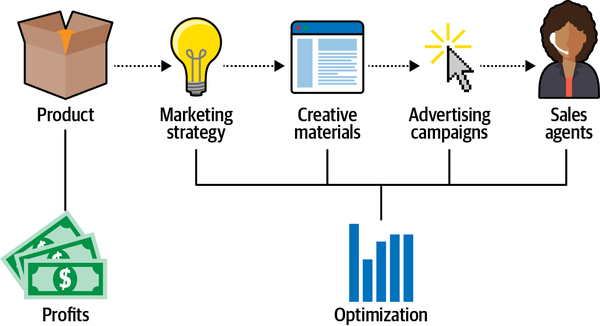
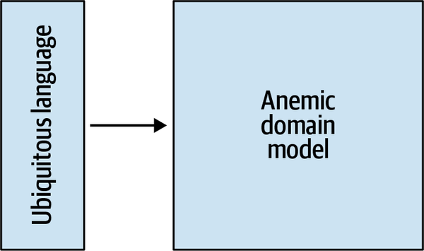
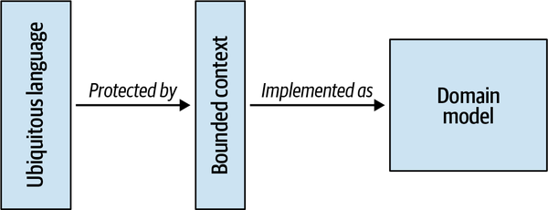
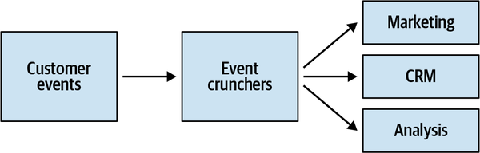
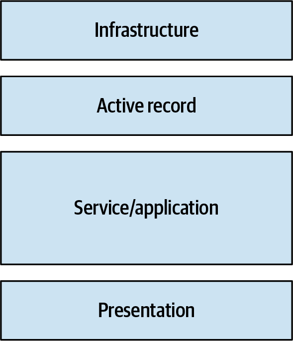
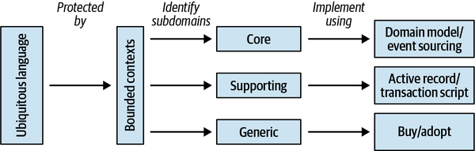
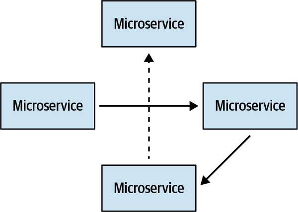

In this appendix, I will share how my domain-driven design journey started: the story of a start-up company that, for the purposes of this example, we’ll refer to as “Marketnovus.” At Marketnovus, we had been employing DDD methodology since the day the company was founded. Over the years, not only had we committed every possible DDD mistake, but we also had the opportunity to learn from those mistakes and fix them. I will use this story and the mistakes we made to demonstrate the role that DDD patterns and practices play in the success of a software project.
This case study consists of two parts. In the Part I, I’ll walk you through the stories of five of Marketnovus’s bounded contexts, what design decisions were made, and what the outcomes were. In the second part, I will discuss how these stories reflect the material you learned in this book.
Before we begin, I need to stress that Marketnovus doesn’t exist anymore. As a result, this appendix is in no way promotional. Furthermore, since this is a defunct company, I’m free to speak honestly about our experiences.
Before we delve into the bounded contexts and how they were designed, as well-behaved DDD practitioners we have to start by defining Marketnovus’s business domain.
Imagine you are producing a product or a service. Marketnovus allowed you to outsource all of your marketing-related chores. Marketnovus’s experts would come up with a marketing strategy for your product. Its copywriters and graphic designers would produce tons of creative material, such as banners and landing pages, that would be used to run advertising campaigns promoting your product. All the leads generated by these campaigns would be handled by Marketnovus’s sales agents, who would make the calls and sell your product. This process is depicted in Figure A-1.

Most importantly, this marketing process provided many opportunities for optimization, and that’s exactly what the analysis department was in charge of. They analyzed all the data to make sure Marketnovus and its clients were getting the biggest bang for their buck, whether by pinpointing the most successful campaigns, celebrating the most effective creatives, or ensuring that the sales agents were working on the most promising leads.
Since we were a self-funded company, we had to get rolling as fast as possible. As a result, right after the company was founded, the first version of our software system had to implement the first one-third of our value chain:
A system for managing contracts and integrations with external publishers
A catalog for our designers to manage creative materials
A campaign management solution to run advertising campaigns
I was overwhelmed and had to find a way to wrap my head around all the complexities of the business domain. Fortunately, not long before we started working, I read a book that promised just that. Of course, I’m talking about Eric Evans’s seminal work, Domain-Driven Design: Tackling Complexity at the Heart of Software.
If you have read this book’s Preface, you know Evans’s book provided the answers I’d been seeking for quite a while: how to design and implement business logic. That said, for me it wasn’t an easy book to comprehend on the first read. Nevertheless, I felt like I’d already gotten a strong grasp of DDD just by reading the tactical design chapters.
Guess how the system was initially designed? It would definitely make a certain prominent individual1 from the DDD community very proud.
The architectural style of our first solution could be neatly summarized as “aggregates everywhere.” Agency, campaign, placement, funnel, publisher: each and every noun in the requirements was proclaimed as an aggregate.
All of those so-called aggregates resided in a huge, lone, bounded context. Yes, a big, scary monolith, the kind everyone warns you about nowadays.
And of course, those were no aggregates. They didn’t provide any transactional boundaries, and they had almost no behavior in them. All the business logic was implemented in an enormous service layer.
When you aim to implement a domain model but end up with the active record pattern, it is often termed an “anemic domain model” antipattern. In hindsight, this design was a by-the-book example of how not to implement a domain model. However, things looked quite different from a business standpoint.
From the business’s point of view, this project was considered a huge success! Despite the flawed architecture, we were able to deliver working software in a very aggressive time to market. How did we do it?
We somehow managed to come up with a robust ubiquitous language. None of us had any prior experience in online marketing, but we could still hold a conversation with domain experts. We understood them, they understood us, and to our astonishment, domain experts turned out to be very nice people! They genuinely appreciated the fact that we were willing to learn from them and their experience.
The smooth communication with the domain experts allowed us to grasp the business domain in no time and implement its business logic. Yes, it was a pretty big monolith, but for two developers in a garage, it was just good enough. Again, we produced working software in a very aggressive time to market.
Our understanding of domain-driven design at this stage could be represented with the simple diagram shown in Figure A-2.

Soon after we deployed the campaign management solution, leads started flowing in, and we were in a rush. Our sales agents needed a robust customer relationship management (CRM) system to manage the leads and their lifecycles.
The CRM had to aggregate all incoming leads, group them based on different parameters, and distribute them across multiple sales desks around the globe. It also had to integrate with our clients’ internal systems, both to notify the clients about changes in the leads’ lifecycles and to complement our leads with additional information. And, of course, the CRM had to provide as many optimization opportunities as possible. For example, we needed to be able to make sure the agents were working on the most promising leads, assign leads to agents based on their qualifications and past performance, and allow a very flexible solution for calculating agents’ commissions.
Since no off-the-shelf product fit our requirements, we decided to roll out our own CRM system.
The initial implementation approach was to continue focusing on the tactical patterns. Again, we pronounced every noun as an aggregate and shoehorned them into the same monolith. This time, however, something felt wrong right from the start.
We noticed that, all too often, we were adding awkward prefixes to those “aggregates” names: for example, CRMLead and MarketingLead, MarketingCampaign and CRMCampaign. Interestingly, we never used those prefixes in our conversations with the domain experts. Somehow, they always understood the meaning from the context.
Then I recalled that domain-driven design has a notion of bounded contexts that we had been ignoring so far. After revisiting the relevant chapters of Evans’s book, I learned that bounded contexts solve exactly the same issue we were experiencing: they protect the consistency of the ubiquitous language. Furthermore, by that time, Vaughn Vernon had published his “Effective Aggregate Design” paper. The paper made explicit all the mistakes we were making when designing the aggregates. We were treating aggregates as data structures, but they play a much larger role by protecting the consistency of the system’s data.
We took a step back and redesigned the CRM solution to reflect these revelations.
We started by dividing our monolith into two distinct bounded contexts: marketing and CRM. Of course, we didn’t go all the way to microservices here; we just did the bare minimum to protect the ubiquitous language.
However, in the new bounded context, the CRM, we were not going to repeat the same mistakes we made in the marketing system. No more anemic domain models! Here we would implement a real domain model with real, by-the-book aggregates. In particular, we vowed that:
Each transaction would affect only one instance of an aggregate.
Instead of an ORM, each aggregate itself would define the transactional scope.
The service layer would go on a very strict diet, and all the business logic would be refactored into the corresponding aggregates.
We were so enthusiastic about doing things the right way. But, soon enough, it became apparent that modeling a proper domain model is hard!
Relative to the marketing system, everything took much more time! It was almost impossible to get the transactional boundaries right the first time. We had to evaluate at least a few models and test them, only to figure out later that the one we hadn’t thought about was the correct one. The price of doing things the “right” way was very high: lots of time.
Soon it became obvious to everyone that there was no chance in hell we would meet the deadlines! To help us out, management decided to offload implementation of some of the features to…the database administrators team.
Yes, to implement the business logic in stored procedures.
This one decision resulted in much damage down the line. Not because SQL is not the best language for describing business logic. No, the real issue was a bit more subtle and fundamental.
This situation produced an implicit bounded context whose boundary dissected one of our most complex business entities: the Lead.
The result was two teams working on the same business component and implementing closely related features, but with minimal interaction between them. Ubiquitous language? Give me a break! Literally, each team had its own vocabulary to describe the business domain and its rules.
The models were inconsistent. There was no shared understanding. Knowledge was duplicated, and the same rules were implemented twice. Rest assured, when the logic had to change, the implementations went out of sync immediately.
Needless to say, the project wasn’t delivered anywhere near on time, and it was full of bugs. Nasty production issues that had flown under the radar for years corrupted our most precious asset: our data.
The only way out of this mess was to completely rewrite the Lead aggregate, this time with proper boundaries, which we did a couple of years later. It wasn’t easy, but the mess was so bad there was no other way around it.
Even though this project failed pretty miserably by business standards, our understanding of domain-driven design evolved a bit: build a ubiquitous language, protect its integrity using bounded contexts, and instead of implementing an anemic domain model everywhere, implement a proper domain model everywhere. This model is shown in Figure A-3.

Of course, a crucial part of domain-driven design was missing here: subdomains, their types, and how they affect a system’s design.
Initially we wanted to do the best job possible, but we ended up wasting time and effort on building domain models for supporting subdomains. As Eric Evans put it, not all of a large system will be well designed. We learned that the hard way, and we wanted to use the acquired knowledge in our next project.
After the CRM system was rolled out, we suspected that an implicit subdomain was spread across marketing and CRM. Whenever the process of handling incoming customer events had to be modified, we had to introduce changes both in the marketing and CRM bounded contexts.
Since conceptually this process didn’t belong to any of them, we decided to extract this logic into a dedicated bounded context called “event crunchers,” shown in Figure A-4.

Since we didn’t make any money out of the way we move data around, and there weren’t any off-the-shelf solutions that could have been used, event crunchers resembled a supporting subdomain. We designed it as such.
Nothing fancy this time: just layered architecture and some simple transaction scripts. This solution worked great, but only for a while.
As our business evolved, we implemented more and more features in the event crunchers. It started with business intelligence (BI) people asking for some flags: a flag to mark a new contact, another one to mark various first-time events, some more flags to indicate some business invariants, and so on.
Eventually, those simple flags evolved into a real business logic, with complex rules and invariants. What started out as transaction scripts evolved into a full-fledged core business subdomain.
Unfortunately, nothing good happens when you implement complex business logic as transaction scripts. Since we didn’t adapt our design to cope with the complex business logic, we ended up with a very big ball of mud. Each modification to the codebase became more and more expensive, quality went downhill, and we were forced to rethink the event crunchers design. We did that a year later. By that time, the business logic had become so complex that it could only be tackled with event sourcing. We refactored the event crunchers’ logic into an event-sourced domain model, with other bounded contexts subscribing to its events.
One day, the sales desk managers asked us to automate a simple yet tedious procedure they had been doing manually: calculate the commissions for the sales agents.
Again, it started out simple: once a month, just calculate a percentage of each agent’s sales and send the report to the managers. As before, we contemplated whether this was a core subdomain. The answer was no. We weren’t inventing anything new, weren’t making money out of this process, and if it was possible to buy an existing implementation, we definitely would. Not core, not generic, but another supporting subdomain.
We designed the solution accordingly: active record objects, orchestrated by a “smart” service layer, as shown in Figure A-5.

Once the process became automated, boy, did everyone in the company become creative about it. Our analysts wanted to optimize the heck out of this process. They wanted to try out different percentages, tie percentages to sales amounts and prices, unlock additional commissions for achieving different goals, and on and on. Guess when the initial design broke down?
Again, the codebase started turning into an unmanageable ball of mud. Adding new features became more and more expensive, bugs started to appear—and when you’re dealing with money, even the smallest bug can have BIG consequences.
As with the event crunchers project, at some point we couldn’t bear it anymore. We had to throw away the old code and rewrite the solution from the ground up, this time as an event-sourced domain model.
And just as in the event crunchers project, the business domain was initially categorized as a supporting one. As the system evolved, it gradually mutated into a core subdomain: we found ways to make money out of these processes. However, there is a striking difference between these two bounded contexts.
For the bonuses project, we had a ubiquitous language. Even though the initial implementation was based on active records, we could still have a ubiquitous language.
As the domain’s complexity grew, the language used by the domain experts got more and more complicated as well. At some point, it could no longer be modeled using active records! This realization allowed us to notice the need for a change in the design much earlier than we did in the event crunchers project. We saved a lot of time and effort by not trying to fit a square peg into a round hole, thanks to the ubiquitous language.
At this point, our understanding of domain-driven design had finally evolved into a classic one: ubiquitous language, bounded contexts, and different types of subdomains, each designed according to its needs, as shown in Figure A-6.

However, things took quite an unexpected turn for our next project.
Our management was looking for a profitable new vertical. They decided to try using our ability to generate a massive number of leads and sell them to smaller clients, ones we hadn’t worked with before. This project was called “marketing hub.”
Since management had defined this business domain as a new profit opportunity, it was clearly a core business domain. Hence, designwise, we pulled out the heavy artillery: event-sourced domain model and CQRS. Also, back then, a new buzzword, microservices, started gaining lots of traction. We decided to give it a try.
Our solution looked like the implementation shown in Figure A-7.

Small services, each having its own database, with both synchronous and asynchronous communication between them: on paper, it looked like a perfect solution design. In practice, not so much.
We näively approached microservices thinking that the smaller the service was, the better. So we drew service boundaries around the aggregates. In DDD lingo, each aggregate became a bounded context on its own.
Again, initially this design looked great. It allowed us to implement each service according to its specific needs. Only one would be using event sourcing, and the rest would be state-based aggregates. Moreover, all of them could be maintained and evolved independently.
However, as the system grew, those services became more and more chatty. Eventually, almost each service required data from all the other services to complete some of its operations. The result? What was intended to be a decoupled system ended up being a distributed monolith: an absolute nightmare to maintain.
Unfortunately, there was another, much more fundamental issue we had with this architecture. To implement the marketing hub, we used the most complex patterns for modeling the business domain: domain model and event-sourced domain model. We carefully crafted those services. But it all was in vain.
Despite the fact that the business considered the marketing hub to be a core subdomain, it had no technical complexity. Behind that complex architecture stood a very simple business logic, one so simple that it could have been implemented using plain active records.
As it turned out, the businesspeople were looking to profit by leveraging our existing relationships with other companies, and not through the use of clever algorithms.
The technical complexity ended up being much higher than the business complexity. To describe such discrepancies in complexities, we use the term accidental complexity, and our initial design ended up being exactly that. The system was overengineered.
Those were the five bounded contexts I wanted to tell you about: marketing, CRM, event crunchers, bonuses, and marketing hub. Of course, such a wide business domain as Marketnovus entailed many more bounded contexts, but I wanted to share the bounded contexts we learned from the most.
Now that we’ve walked through the five bounded contexts, let’s look at this from a different perspective. How did application or misapplication of core elements of domain-driven design influence our outcomes? Let’s take a look.
In my experience, ubiquitous language is the “core subdomain” of domain-driven design. The ability to speak the same language with our domain experts has been indispensable to us. It turned out to be a much more effective way to share knowledge than tests or documents.
Moreover, the presence of a ubiquitous language has been a major predictor of a project’s success for us:
When we started, our implementation of the marketing system was far from perfect. However, the robust ubiquitous language compensated for the architectural shortcomings and allowed us to deliver the project’s goals.
In the CRM context, we screwed it up. Unintentionally, we had two languages describing the same business domain. We strived to have a proper design, but because of the communication issues we ended up with a huge mess.
The event crunchers project started as a simple supporting subdomain, and we didn’t invest in the ubiquitous language. We regretted this decision big time when the complexity started growing. It would have taken us much less time if we initially started with a ubiquitous language.
In the bonuses project, the business logic became more complex by orders of magnitude, but the ubiquitous language allowed us to notice the need for a change in the implementation strategy much earlier.
Hence, ubiquitous language is not optional, regardless of whether you’re working on a core, supporting, or generic subdomain.
We learned the importance of investing in the ubiquitous language as early as possible. It requires immense effort and patience to “fix” a language if it has been spoken for a while in a company (as was the case with our CRM system). We were able to fix the implementation. It wasn’t easy, but eventually we did it. That’s not the case, however, for the language. For years, some people were still using the conflicting terms defined in the initial implementation.
As you learned in Chapter 1, there are three types of subdomains— core, supporting, and generic—and it’s important to identify the subdomains at play when designing the solution.
It can be challenging to identify a subdomain’s type. As we discussed in Chapter 1, it’s important to identify the subdomains at the granularity level that is relevant to the software system you are building. For example, our marketing hub initiative was intended to be the company’s additional profit source. However, the software aspect of this functionality was a supporting subdomain, while leveraging the relationships and contracts with other companies was the actual competitive advantage, the real core subdomain.
Furthermore, as you learned in Chapter 11, it’s not enough to identify a subdomain’s type. You also have to be aware of the possible evolutions of the subdomain into another type. At Marketnovus, we witnessed almost all the possible combinations of changes in subdomain types:
Both the event crunchers and bonuses started as supporting subdomains, but once we discovered ways to monetize these processes, they became our core subdomains.
In the marketing context, we implemented our own creative catalog. There was nothing really special or complex about it. However, a few years later, an open source project came out that offered even more features than we originally had. Once we replaced our implementation with this product, the supporting subdomain became a generic one.
In the CRM context, we had an algorithm that identified the most promising leads. We refined it over time and tried different implementations, but eventually it was replaced with a machine learning model running in a cloud vendor’s managed service. Technically, a core subdomain became generic.
As we’ve seen, our marketing hub system started as a core, but ended up being a supporting subdomain, since the competitive edge resided in a completely different dimension.
As you’ve learned throughout this book, the subdomain types affect a wide range of design decisions. Failing to properly identify a subdomain can be a costly mistake as, for example, in the case of the event crunchers and the marketing hub.
Here is a trick I came up with at Marketnovus to foolproof the identification of subdomains: reverse the relationship between subdomains and tactical design decisions. Choose the business logic implementation pattern. No speculation or gold plating; simply choose the pattern that fits the requirements at hand. Next, map the chosen pattern to a suitable subdomain type. Finally, verify the identified subdomain type with the business vision.
Reversing the relationship between subdomains and tactical design decisions creates an additional dialogue between you and the business. Sometimes businesspeople need us as much as we need them.
If they think something is a core business, but you can hack it in a day, then it is either a sign that you need to look for finer-grained subdomains or that questions should be raised about the viability of that business.
On the other hand, things get interesting if a subdomain is considered a supporting one by the business but can only be implemented using the advanced modeling techniques: domain model or event-sourced domain model.
First, the businesspeople may have gotten overly creative with their requirements and ended up with accidental business complexity. It happens. In such a case, the requirements can, and probably should, be simplified.
Second, it might be that the businesspeople don’t yet realize they employ this subdomain to gain an additional competitive edge. This happened in the case of the bonuses project. By uncovering this mismatch, you’re helping the business identify new profit sources faster.
Most importantly, never ignore “pain” when implementing the system’s business logic. It is a crucial signal to evolve and improve either the model of the business domain or the tactical design decisions. In the latter case, it means the subdomain has evolved, and it’s time to go back and rethink its type and implementation strategy. If the type has changed, talk with the domain experts to understand the business context. If you need to redesign the implementation to meet new business realities, don’t be afraid of this kind of change. Once the decision of how to model the business logic is made consciously and you’re aware of all the possible options, it becomes much easier to react to such a change and refactor the implementation to a more elaborate pattern.
At Marketnovus, we tried quite a few strategies for setting the boundaries of bounded contexts:
Linguistic boundaries: We split our initial monolith into marketing and CRM contexts to protect their ubiquitous languages.
Subdomain-based boundaries: Many of our subdomains were implemented in their own bounded contexts; for example, event crunchers and bonuses.
Entity-based boundaries: As we discussed earlier, this approach had limited success in the marketing hub project, but it worked in others.
Suicidal boundaries: As you may remember, in the initial implementation of the CRM we dissected an aggregate into two different bounded contexts. Never try this at home, okay?
Which of these strategies is the recommended one? None of them fits in all cases. In our experience, it was much safer to extract a service out of a bigger one than to start with services that are too small. Hence, we preferred to start with bigger boundaries and decompose them later, as more knowledge was acquired about the business. How wide are those initial boundaries? As we discussed in Chapter 11, it all goes back to the business domain: the less you know about the business domain, the wider the initial boundaries.
This heuristic served us well. For example, in the cases of the marketing and CRM bounded contexts, each encompassed multiple subdomains. As time passed, we gradually decomposed the initially wide boundaries into microservices. As we defined in Chapter 14, throughout the evolution of the bounded contexts, we stayed in the range of the safe boundaries. We were able to avoid going past the safe boundaries by doing the refactoring only after gaining enough knowledge of the business domain.
In the stories of Marketnovus’s bounded contexts I showed how our understanding of domain-driven design evolved through time (refer to Figure A-6 for a refresher):
We always started by building a ubiquitous language with the domain experts to learn as much as possible about the business domain.
In the case of conflicting models, we decomposed the solution into bounded contexts, following the linguistic boundaries of the ubiquitous language.
We identified the subdomains’ boundaries and their types in each bounded context.
For each subdomain we chose an implementation strategy by using tactical design heuristics.
We verified the initial subdomain types with those resulting from the tactical design. In cases of mismatching types, we discussed them with the business. Sometimes this dialogue led to changes in the requirements, because we were able to provide a new perspective on the project to the product owners.
As more domain knowledge was acquired, and if it was needed, we decomposed the bounded contexts further into contexts with narrower boundaries.
If we compare this vision of domain-driven design with the one we started with, I’d say the main difference is that we went from “aggregates everywhere” to “ubiquitous language everywhere.”
In parting, since I’ve told you the story of how Marketnovus started, I want to share how it ended.
The company became profitable very quickly, and eventually it was acquired by its biggest client. Of course, I cannot attribute its success solely to domain-driven design. However, during all those years, we were constantly in “start-up mode.”
What we term “start-up mode” in Israel is called “chaos” in the rest of the world: constantly changing business requirements and priorities, aggressive time frames, and a tiny R&D team. DDD allowed us to tackle all of these complexities and keep delivering working software. Hence, when I look back, the bet we placed on domain-driven design paid off in full.
1 @DDDBorat is a parody Twitter account known for sharing bad advice on domain-driven design.